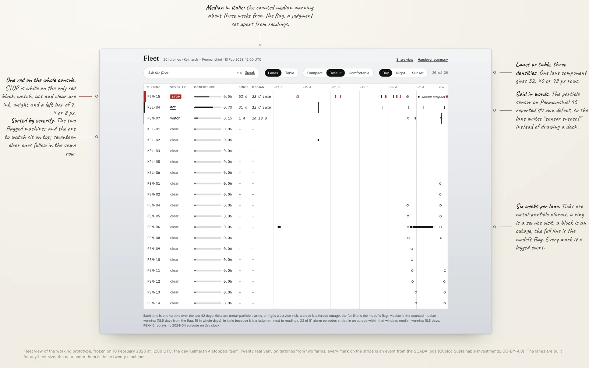
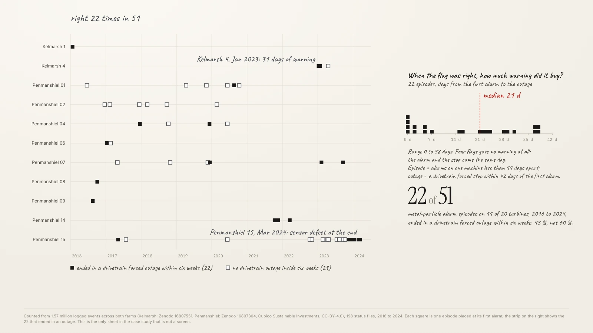
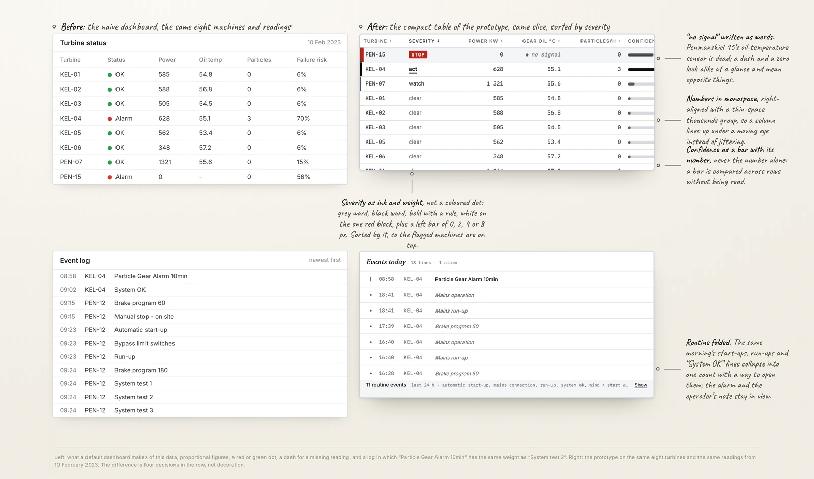
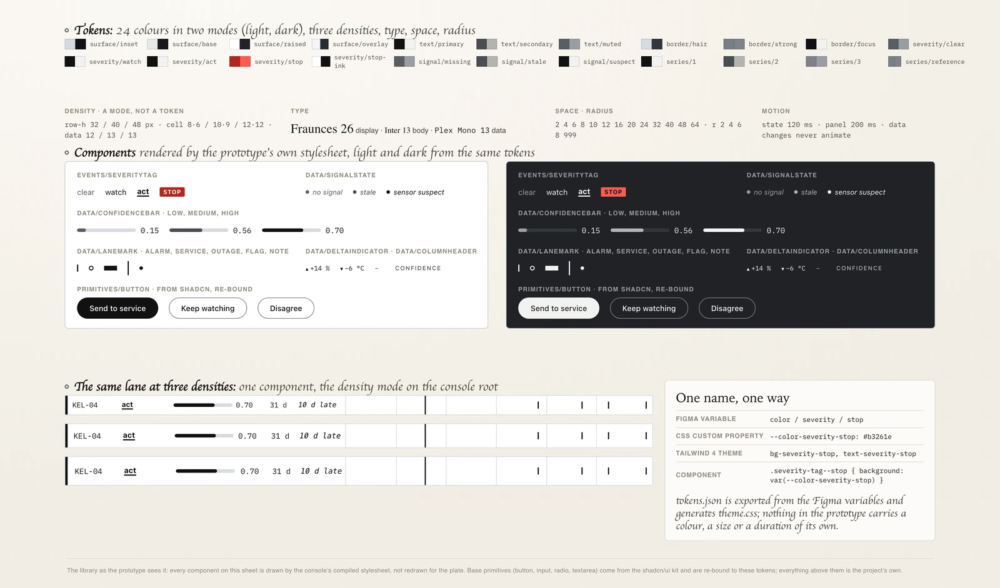
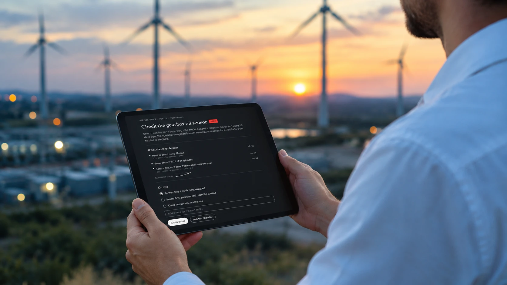
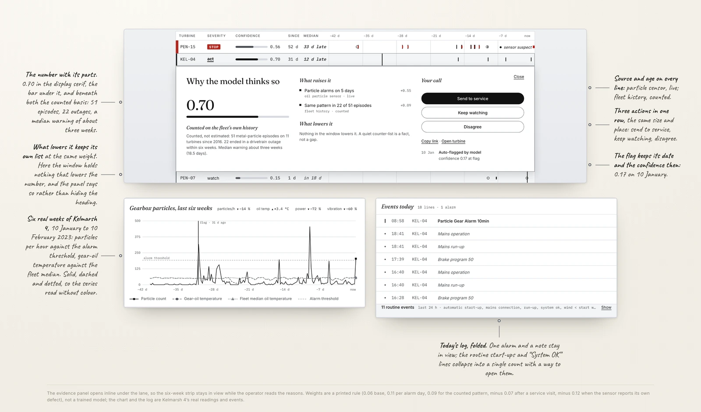
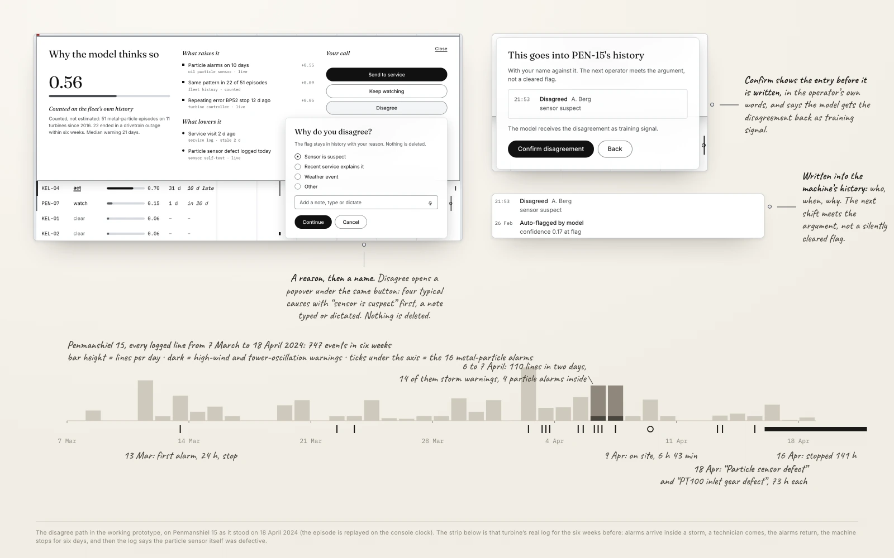
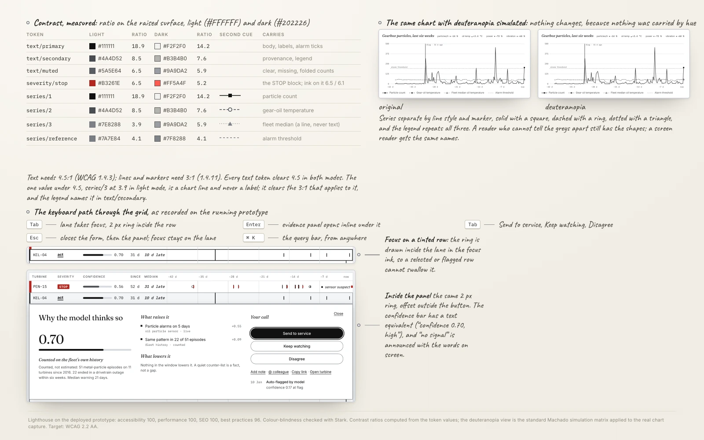

An operator has three ways out of a flag. None of them is free.
A wind farm reports every ten minutes. Wind speed, power, oil temperature, vibration, metal particles in the oil. A model compares today with the machines that failed before. It returns one number. On the screen that number lands next to one turbine, lifted out of a list of twenty.
The gearbox is the expensive part. Replacing one takes a crane and costs hundreds of thousands. Caught early, the same fault is a bearing, swapped during a stop that was already planned. That gap is the whole reason the model exists.
The operator has three ways out. Send a technician, and pay for the visit even if he finds nothing. Keep watching, and let the machine keep turning on a bad bearing. Dismiss the flag, and own the gearbox if it goes.
So the console opens on the whole fleet, not on a notification. Each turbine is a lane across the last six weeks. Alarms are ticks. Service visits are rings. Outages are blocks. The flag is a full line. Next to the lane sit the severity, the confidence with its bar, the days since the flag, and the counted median warning in italic, because it is a judgment placed next to readings. The flagged machines sit on top. The same rows exist as a table, at three densities, from one component.

Every number on the screen is counted from nine years of real turbine logs
There is no invented client here and no fictional brief. The console runs on open data from two British wind farms, Kelmarsh and Penmanshiel, released by Cubico Sustainable Investments under CC-BY-4.0. Twenty turbines. A reading every ten minutes. 1.57 million logged events, 2016 to 2024.
The signals the model leans on are real, and the export names them: oil temperature, oil pressure, bearing temperatures, drive train vibration, a particle count in the oil. Of 299 columns, 107 carry data. The other 191 are empty all year. Anything missing is marked NaN, not zero. A zero is a measurement. A blank is the absence of one. The interface has to keep that difference.
The panel quotes a counted number, not a hunch. I grouped the particle alarms into episodes: alarms on one machine, less than two weeks apart. Then I checked what happened next. Fifty-one episodes on eleven turbines. Twenty-two ended in a forced stop within six weeks. When the signal was right, it bought about three weeks of warning: a median of 18.5 days. Four times it bought none.
One number needed correcting first. The condition sensors show only 65% coverage in 2016, which looks like a sensor dropping out. It is not. Those channels did not exist before May 2016, and they run at 95 to 100% after. The gap is a commissioning date. An interface built on the first reading would have solved a problem that was never there.

Most of the log is the turbine saying that it is fine
Nine years on six machines produced 504,180 events. That is about twenty-eight per turbine per day. Sorted by time, the way a feed arrives, the screen is unreadable. Not because of styling. Five routine messages make up 57.8% of every line ever written: start-up, run-up, system OK, low wind, mains connection. The log spends most of its life saying the turbine woke up and there is no wind.
The lines that matter are rare. In the same nine years: fifteen particle alarms, seven stops for low oil pressure, six warnings for bearing temperature. What the operator needs is a dozen lines hidden in half a million.
So the naive dashboard fails before anything is drawn. Four decisions in the row carry most of the fix. Numbers in monospace, right-aligned, so a column lines up under a moving eye. Confidence as a bar with its number, never the number alone, because a bar can be compared across rows without being read. A missing reading written as “no signal”, because a dash and a zero look alike and mean opposite things. Severity as ink and weight, not a coloured dot: a grey word, a black word, bold with a rule, white on the one red block, plus a left bar of 0, 2, 4 or 8 pixels. The rows sort by it. The routine lines fold into one count with a way to open them. The alarm and the operator’s note stay in view.

The library exists so that one number cannot contradict itself on two screens
The base primitives come from the shadcn/ui kit. I did not redraw them. A button, an input, a radio group, a text area: that is plumbing, and drawing it again proves nothing. Everything the project exists for sits above that line, and that part is mine. The density scale. The lane and its marks. The data cell. The chart palette. The confidence bar and panel. The provenance line. The override path. The severity matrix. Twenty-seven component sets in all.
Variables first, components second. Colour, spacing, type, radius and motion live as Figma variables in six collections. Every component reads them. None carries a value of its own. Colour is a decision as much as a token: black, white, metallic grey and one red, spent only on STOP. A red-and-green pair fails colour-blind operators, and “clear” has to stay quiet. The same 24 tokens give two modes, paper on metal by day and graphite by night. The console switches at the wind farm’s own sunset. Density is a mode too, so one lane draws at three row heights without a second component.
The chain runs one way. Figma variables become CSS custom properties. Those become a Tailwind theme. The prototype reads the theme. The variables export to a JSON file that generates the theme, so nothing in the code carries a colour, a size or a duration of its own. Change a value in one place and the other cannot quietly disagree. That is why the system was drawn before the prototype, not traced back from it afterwards.


The panel shows what raised the number and what lowered it, in that order
On 10 January 2023 a turbine at Kelmarsh logged a particle alarm. It lasted five minutes, at full power. More followed: 26 January, then 1, 5 and 10 February. On the evening of 10 February the alarm crossed its daily threshold and the turbine stopped itself. Thirty-one days from first signal to forced outage.
That is the case the panel is built for. It is built to be doubted. It opens inline under the lane, so the six-week strip stays in view. The number sits large, with its bar. Under it, the counted basis in one sentence. Then two lists. What raised the confidence, each signal with its weight. Directly beneath, what lowered it, at the same weight. Counter-evidence is never folded away behind a control. A reason the operator cannot see is a reason they cannot weigh. When nothing lowers the number, the panel says so instead of hiding the heading.
Every line says where it came from and how old it is. A missing signal says “no signal” in words instead of resolving to zero. The flag keeps its own date and the confidence it had then, 0.17 on 10 January, so the growth of the number is visible. In the prototype the confidence is a printed rule, not a trained model: 0.06 to start, 0.11 for each day with an alarm, plus the counted pattern, minus a recent service visit, minus a sensor that reported its own defect. A real product would put a model behind it. The panel would not change. Its job is to show the parts, whatever produces them.

After a month of alarms, the log said the sensor itself was broken
A second machine, at Penmanshiel, ran the same story to a different end. Particle alarms on 13, 22 and 23 March 2024. More in early April. Some arrived in the middle of a storm that filled the same feed with high-wind stops and tower warnings. A technician came on 9 April. The alarms came back after the visit. On 16 April the machine was taken out of service for 141 hours.
Then, on 18 April, the log raised two more warnings. The temperature sensor was defective. So was the particle sensor. Five weeks of alarms, a site visit and six days of downtime, and nothing in the record can say whether there was ever metal in that oil. The prototype replays this episode on its own clock, so both stories can be read on one screen.
This is why the third action is not a courtesy. “Disagree” sits in the same row as “send to service” and “keep watching”, at the same weight. It is never demoted into a menu. Disagreeing asks for a reason, typed or dictated, with “sensor is suspect” first on the list. It shows the entry before it is written. Then it writes it into the machine’s history with a name against it. The next operator meets the argument, not a silently cleared flag. The model gets the disagreement back as training signal. The record of who overruled what, and why, has to outlive the model.

A dense grid with charts is the hardest accessibility case I have built
Every page in this portfolio scores 100 for accessibility. A data grid with charts is harder than anything before it. Two things break first. Colour alone is not enough. About one operator in twelve will not tell the greys apart, so every series has a shape too: solid with a square, dashed with a ring, dotted with a triangle. The legend repeats all three. A monochrome console makes this honest by construction. Under a deuteranopia simulation the chart looks the same, because nothing was carried by hue.
A grid twenty rows deep is a keyboard trap unless the path through it is designed. So it is. Tab reaches a lane. Enter opens its panel inline. Tab walks the three actions. Escape closes the form, then the panel, with focus back on the lane. The focus ring is drawn inside the lane in the focus ink, so a selected or flagged row cannot swallow it.
The numbers are measured, not assumed. Every text token clears 4.5 to 1 in both modes. The STOP block reads at 6.5 to 1 by day and 6.1 at night. The one value under 4.5, the fleet-median line at 3.9 in light mode, is a chart line and never a label, and it clears the 3 to 1 that applies to it. The confidence bar has a text equivalent, “confidence 0.70, high”, because a bar that only exists visually is a number withheld. A missing reading says “no signal” to a screen reader exactly as it reads on screen. Lighthouse on the deployed prototype: accessibility 100, performance 100, SEO 100, best practices 96. Colour-blindness checked with Stark. Target: WCAG 2.2 AA.

No operator has used this yet. That is the first thing I would change.
The honest limit of this project: it has never met the person it is for. Everything above is reasoned from real data and real failure histories. That is a better foundation than taste. It is still not the same as watching somebody use it at four in the morning.
Four questions would go first. Does anyone press “disagree”? Or is it a button that reads well in a case study and dies in production, and if it dies, is that because disagreeing feels risky rather than hard? Is the bar beside the number read faster than the number alone, or does it only look considered? Does the word “no signal” stop operators from treating a blank as a zero? And at what confidence does an operator stop watching and send somebody? That threshold belongs to them. The interface should learn it, not set it.
A number nobody can argue with is not advice. It is an order.